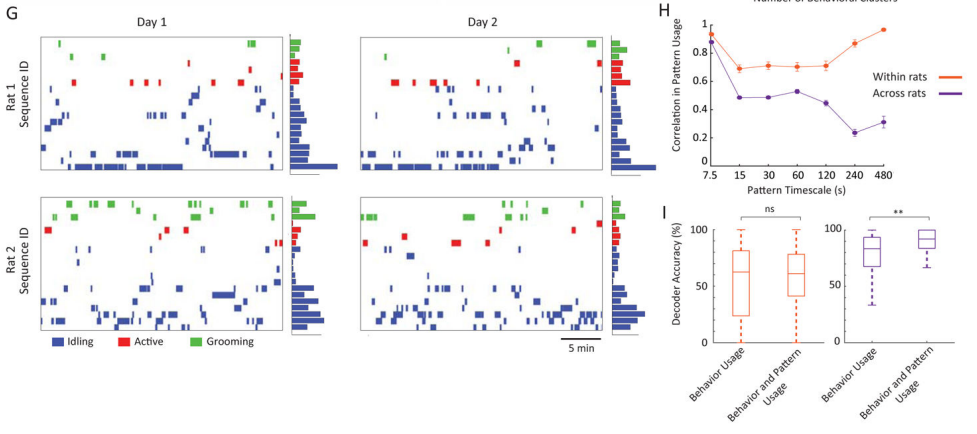

小鼠day2—paperreading
Day2 继续读昨天的那篇哈佛工作
Result
Camparison with keypoint detection using convolutional networks
最近，从头开始训练的2D卷积网络或在人类标记的姿势数据库上训练的2D卷积网络已被应用于检测个体行为任务中未遮挡的视觉标记，主要是2D的场景下(Mathis等人，2018;Pereira et al, 2019)。为了测试我们的方法在更大范围内的3D跟踪方面如何与这些已建立的网络进行比较，我们量化了DeepLabCut相对于CAPTURE的跟踪精度。我们首先使用了推荐的方法，即使用少量手工标记的帧(225)数据对预训练网络进行微调。然后，我们使用微调网络来检测来自6个同步的、校准的摄像机的帧中的关键点，然后我们对摄像机进行三角测量，以产生动物的3D姿势的估计。检查显示关键点预测很差，在一个固定的测试数据集中显示出与人类关键点标签有很大的偏差(图S4)。这些预测在四肢上更糟糕，或者当使用3个摄像头的预测时，表明网络特别难以追踪遮挡的标记。
注：这里主要表示的就是本身已有的方法在追踪动物的3D姿态估计时效果很差 特别是和人体相比，在S4这个图中可以看得出来 以及在只有3个摄像头的情况下，对于动物四肢的检测会有很大的误差。
可能这些网络只是需要更多的训练数据来跟踪3D中的自然行为。为了测试这一点，我们使用100-100,000帧训练DeepLabCut，这些帧通过将地面真值标记位置(由动作捕捉确定)投影到视频帧中来标记，这是计算机视觉(视频S4)中的一种常见做法(Ionescu等人，2014)。在大量样本(100,000和10,000)上训练的网络显示出准确的跟踪，即使在前肢和后肢频繁遮挡的关键点上也是如此(图2)。对于那些在较少帧数(1000和100)上训练的情况来说，这种性能大大下降，特别是当只使用3个相机时。
注： 图2表示DeepLabCut在不同的training frames的表现结果 A和B是video image的示例 用Capture中标注到的label对DeepLabCut进行了训练 图C是一个大致准确度的指标，比较DeepLabCut预测结果和label的误差，以及用了多少训练帧、相机数量和数据是否存在于training set中的指标，从而计算出的一个指标。图D CAPTURE和DeepLabCut之间10-30毫米的精度差异可以在准确重建动物姿势的能力方面产生巨大变化。对于样本内和样本外的动物，我们计算了DeepLabCut报告的19个不同身体片段的长度与使用CAPTURE跟踪的真实片段长度在18毫米以内的帧的比例。图中显示了用于CAPTURE的正确段长度的比例，以便进行比较。阴影的误差条(线内)显示了100帧自举样本的标准偏差。
然而，即使在大量样本上训练，这些卷积网络也不能推广到跟踪样本外携带标记的小鼠。应用于样本外动物的网络显示出20-30毫米的平均跟踪误差，使得在绝大多数帧上无法准确重建动物的姿势(图2D)。使用6个额外的摄像机(总共12个)估计性能并不能挽救这些样本外动物的性能，这与过去的报告一致，这些报告表明，使用2D卷积网络进行3D跟踪需要数十个摄像机和数万到数十万个特定于域和视图的手工标记(Bala等人，2020;Iskakov et al, 2019)。最后，使用大量标记帧来训练DeepLabCut，然后在样本外没有标记的小鼠的手工标记帧上再次微调网络，并没有显著改善跟踪(图S4)。因此，尽管对于约束行为任务的跟踪很有用，但我们发现2D卷积网络目前并不适合于在自由移动的动物中跨多种自然行为进行3D跟踪的更普遍问题(图S4E，表S2)。
注：简单来说就是即使在大量样本上训练了，对于那些没有追踪和做标记的数据，仍然没有一个比较好的结果，误差依然很大。TableS2主要是把Capture和一些现有技术进行对比
Comprehensive profiling of behavioral kinematics
在建立了CAPTURE最先进的精度和在长时间尺度上精确跟踪标记的能力之后，我们接下来验证了这些运动记录可以用来识别已知和新的啮齿动物行为的频率和过渡结构。为此，我们结合了之前两种方法的想法，开发了一个框架，用于描述运动记录中的离散行为:(i)监督行为分类，可用于检测手工标记的示例行为实例，但无法识别新行为(Kabra等人，2013);(ii)无监督行为聚类，可识别更大的潜在新行为集，但迄今为止尚未被证明能够强大地检测已知的啮齿动物行为，如梳理(Berman等人，2014;Wiltschko et al, 2015)。为了混合这些方法，我们分别选择了两组与监督和非监督分类方法相似的特征:80个特征是关于一组常见的啮齿动物行为之间的区别的信息(补充图5)，60个特征是广泛概括动物的姿势和运动学。这产生了一个140个特征矩阵，在约500 ms的时间窗口内封装了动物的行为(Methods)。
为了识别重复的行为实例，我们使用了一种行为映射方法，将这种高维行为特征向量嵌入到二维中，以创建有利于聚类和探索性数据分析的映射(Berman et al, 2014)。我们收集了具有代表性的一组CAPTURE记录(16只小鼠，$1.04·10^9$帧)的时间点，对该集合进行了次采样，以获得不同行为类别的平衡表示，并使用t-随机相邻嵌入(t-SNE)将次采样特征嵌入到二维中(图3A)(Maaten和Hinton, 2008)。所得到的嵌入包含与相似行为的重复实例相对应的密度峰，我们使用分水岭变换对其进行聚类(图3A;视频S5)。通过观察发现，地图上不同区域的行为集群对应于公认的啮齿动物行为类别，如行走、用后腿直立、用舌头梳理面部和身体，以及用后肢挠身体的不同部位(视频S6)。一个类别内的个体行为聚类对应于姿势和运动变化(视频S7)
因此，CAPTURE提供了全面描述啮齿动物行为库的运动学的能力。为了证明这一点，我们检查了有节奏行为中不同身体部位的频谱，特别是梳理，抓挠和湿狗摇(甩干毛发水分)(图3B)。梳理身体的频率在4赫兹和7-9赫兹时始终显示出头部和侧边特定前肢速度的峰值，这与过去的报告一致(Berridge等人，1987)。相比之下，抓挠在7-12 Hz范围内显示出侧面特异性频率峰值，与根据体型调整后小鼠报告的15-20 Hz频率一致(Elliott et al, 2000)。湿狗抖动显示躯干功率在14±0.6 Hz时达到峰值，这与过去使用高速视频分析的研究结果一致(Dickerson等，2012)。有趣的是，虽然湿狗摇晃和梳理的行为频率相似，但幅度不同，抓挠行为的频率和幅度变化更大，这表明它们可能是由更灵活或更不健壮的控制回路产生的(图3C)。此外，CAPTURE能够检测非节奏行为的可变性，例如静态饲养行为的姿势可变性(图3D)。
注： 这块没太多好说的，主要就是把常见的啮齿动物行为之间区别的信息和广泛概括的姿势和运动学相结合产生了一个140个的特征矩阵，这个值得关注一下，后面也是用实验表面他有一个比较好的描述能力，并且比较了一些有节奏的动作中的频率。
New insights into the hierarchical structure of behavior
动物行为被认为是在时间上按等级结构形成重复的行为模式(Dawkins, 1976;Tinbergen, 1950)，然而，到目前为止，还缺乏系统的、定量的方法来识别这些结构。为了解决这个问题，我们首先通过检查不同时间尺度下的行为转移矩阵来探讨啮齿动物行为中存在较长时间尺度时间结构的程度(图S6A)。我们发现，在10-100秒的时间尺度上，过渡矩阵中的结构明显多于第一马尔科夫链(Berman等人，2016)的预测，这是一个通常用于模拟行为动力学的时不变过程(Berridge等人，1987;Wiltschko et al, 2015)。这种结构上的增强在几分钟的时间尺度上就不那么明显了。
为了阐明这些非马尔可夫行为结构的本质，我们开发了一种算法，用于识别在固定时间尺度τ上具有相似行为使用模式的时间时代(图4A)(方法)。作为这些模式的例子，我们使用15-s和2-min的时间尺度来识别不同的行为模式(图S6B-D)。在15-s的时间尺度上，该算法识别出行为中的顺序有序模式，例如面部的“规范”梳理序列，然后是身体(Berridge等人，1987)，或者在我们的任务训练中获得的固定的压杆序列的表现(Kawai等人，2015)。因此，我们将这些检测到的模式称为“序列”(图4B-D)(视频S8)。在2分钟的时间尺度上，它确定了不同的觉醒或任务投入的时期，这些时期往往缺乏刻板的顺序顺序。我们把这些称为“状态”(视频S9)。与此命名一致，15-s时间尺度上的模式转移矩阵明显少于2-min时间尺度上的模式转移矩阵，表明它们在行为之间具有更多的刻板印象排序(图S6E)。
我们使用这些序列和状态来形成行为的分层表示(图4D)，这再次明显比马尔可夫行为(图S6F-S6H)预期的更加结构化。而不是被组织成一个严格的，基于树的层次结构(Berman等人，2016;Dawkins, 1976)，我们发现行为在多个行为序列中是共享的，然后在不同的行为状态中被不同地使用(图4E)。例如，右前肢的梳理既用于持续的身体梳理序列，也用于更短、更有力的梳理事件，这些序列在不同的行为状态下被不同程度地使用(图4F)。
最后，我们使用模式检测算法在7.5到480秒的时间尺度范围内识别使用模式。检测到的模式在不同的时间尺度上很大程度上是不同的，但我们发现超过100秒的时间尺度很少有独特的模式，而低于15秒的模式也类似(图S6B-S6D)。结合我们对迁移矩阵中非马尔可夫结构的分析，这些结果表明，行为使用中最明显的长时间尺度结构是10-100 s时间尺度的模式。
注： 根据时间尺度对行为进行了划分，从这之中定义了一些状态和一些行为，后面发现一些行为在不同的行为序列中是共享的，因此动物行为不是一个严格的树状结构。
Multiscale phenotyping of the effects of drugs and disease
CAPTURE的测量精度和长时间记录运动学的能力，使其能够前所未有地全面描述药物、神经回路操作和疾病状态如何影响行为。作为这方面的第一个例子，我们在急性给予咖啡因和安非他明两种兴奋剂后进行了记录，已知剂量类似地增加了运动活动(Antoniou et al, 1998)。对CAPTURE记录的分析总结了这些发现，表明与baseline或注射生理盐水后的记录相比，咖啡因和安非他明都增加了动物花在运动上的时间(图5A)。然而，我们发现这些化合物引起的变化在受影响的行为类型上有很大的不同。虽然这两种化合物都增加了老鼠在积极行为中花费的时间，但咖啡因(而非安非他明)增加了老鼠花在梳理毛发上的时间比例(图5A-C)。安非他明不仅影响动物表达的行为类型，还影响它们在时间上的模式(图5D)。虽然动物在服用咖啡因后表达的状态和序列与自然发生的觉醒状态相似，但安非他明引发了全新的行为状态，包括重复的运动序列，如转圈圈(图5D,E)(视频S10)。过去，安非他明被认为会引发双相行为反应，低剂量刺激运动活动，高剂量刺激重复性运动“刻板印象”，如头部摆动(Antoniou et al, 1998)。我们的研究结果表明，安非他明引发的重复行为的增加始于低剂量的给药，并且至少部分地与它对运动的影响分离。
在验证了CAPTURE识别药物对行为的已知和新影响的能力之后，我们接下来筛选了脆性X综合征大鼠模型的行为变化，脆性X综合征是人类自闭症谱系障碍中最常见的单基因形式(Miller et al, 2019)。虽然使用定向行为测试的行为分析已经在各种自闭症模型中进行，包括脆性X综合征(Silverman et al, 2010)，但行为变化的报告经常在研究中发生冲突，特别是那些与梳理行为有关的研究(Brunner et al, 2015)。我们使用CAPTURE来比较雄性Fmr1-KO大鼠和它们的野生型笼子伴侣连续三天的家庭笼子行为。虽然基因敲除的小鼠花在移动上的时间相当，但它们花在梳理上的时间明显更多(图6A-6B)。这不仅仅反映了花在正常梳理行为上的时间增加了;Fmr1-KO还参与了不同类型的梳理行为，这些行为往往发生在更长的回合中(图6C)。与对照组相比，敲除组的梳理行为也被组装成不同的顺序模式，表现出行为序列和状态的改变(图6D)。这种影响部分是由敲除动物中异常和特殊的梳理序列驱动的(图6E)。综上所述，这表明尽管Fmr1-KO大鼠的运动行为在很大程度上与野生型动物重叠，但它们表现出特殊的持续性梳理序列，这是一种强大的行为表现，非常适合探索自闭症谱系障碍中存在的运动刻板印象的神经机制(Kalueff et al, 2016)。
注： 这段主要就是分别讲述了一下药物和疾病存在的影响，用了咖啡因和安非他明的对照组，咖啡因和普通的情况类似而安非他明会有更多地重复运动，比如转圈圈；疾病方面做了FMr1基因敲除的对照组，发现敲除组容易会出现更多地梳理动作，进而产生不一样的一些行为序列或状态。
Stability, individuality, and commonality of the rodent behavioral repertoire
由于遗传、环境、发育和社会因素的相互作用，啮齿类动物在行为上表现出个体差异(车床，2004)。个性通常通过对行为使用的粗略估计来衡量(Forkosh等人，2019;Freund et al, 2013)，留下了动物是否在其他方面表现出个性的问题，例如在运动学和长时间尺度的行为模式中，现在可以使用CAPTURE系统地探索。
因此，我们使用CAPTURE来比较5只雌性LE小鼠在3-5天的baseline记录中的行为。CAPTURE发现了不同天数和不同动物在有节奏的行为的活力和频率上的细微运动学差异，但这些运动学差异明显小于不同行为之间的差异，这表明动物是从共同的行为集合中提取的(图7A-7B)。然而，尽管动物具有共同的行为特征，但它们在这些行为的使用上存在显著差异，在动物之间显示出80%的相似性(图7C-E)。这种用法上的相似性仅显示出对行为定义的粗疏程度的适度依赖，这表明行为用法上的这种个别性并不是动物行为运动学上的微小差异所造成的微不足道的结果(图7F)。有趣的是，动物之间的差异在梳理和用后腿直立行为上最为明显，这表明它们可能对发育或环境差异特别敏感(图7E)。
除了整体行为使用的差异，动物在长期的行为模式中表现出个性。动物们再次从一组共同的时间模式中作画(图S7)。单个动物在不同天数内的模式使用表现出约80%的相似性，但在不同动物之间的使用差异更为显著，特别是在长时间尺度上(图7G-H)。通过添加关于长时间尺度模式的额外信息，训练识别基于行为使用的动物身份的分类器得到了显著改进(图7I)。这表明，行为模式反映了一种以前未被重视的个性，超越了行为习惯的变化。

注： 这段主要讲了一下一些行为模式反映出的个体差异，以上均属于Result的部分，接下来是Discussion的部分
Discussion
我们将动作捕捉、深度学习和身体穿孔结合起来，在长达一周的时间尺度内，对自由行为的小鼠的头部、躯干和附体进行连续的运动学跟踪。与过去使用深度相机或卷积神经网络的方法相比，CAPTURE提供了3D跟踪四肢的能力，跨越小鼠的全部行为(图1,2)。为了解析这些连续的3D运动记录，我们开发了一个无监督的计算分析框架，该框架提供了离散生物行为和长时间行为模式(如序列和状态)方面的行为概要图(图3)。这一分析使我们能够概括已知啮齿动物行为的运动学和序列特征，并识别出新的运动学、序列和组织特征，包括啮齿动物的行为状态和所观察到的梳理类型之间的耦合(图4F)。最后，我们演示了CAPTURE如何用于识别药物和疾病状态下的新行为、顺序和运动学变化(图5和6)，以及个体间的变化(图7)，特别是在自闭症谱系障碍大鼠模型中展示了持久性梳洗stereotype（运动模板？）的存在。
Comparisons to the emerging behavioral tracking toolkit
神经科学领域正在进行一场行为革命。就像用于监测脑电、钙、血流动力学和神经调节活动的各种选项一样，扩展的行为工具包包含一系列用于行为测量的工具，这些工具可以区分不同的独特行为数量，以及它们在2D或3D中报告身体关键点位置的能力(表S2)。通过将大量高分辨率摄像机视图与高信号噪声标记相结合，CAPTURE为连续跨大鼠行为库的3D运动学测量提供了强大可靠的框架。相比之下，使用深度相机的替代方法(Hong et al .， 2015;Wiltschko等人，2015)可能会降低成本并增加吞吐量，但它们与红外反射(例如，从床上和其他物体)，将动物与竞技场中的物体分离的能力，以及无法跟踪定义的关键点，包括附属物的位置作斗争。这些限制限制了深度相机方法可以应用的环境范围，以及它们测试与行为运动学相关的神经活动假设的能力。另外，我们发现2D卷积网络虽然有助于跟踪行为任务中的非遮挡关键点，但需要大量的训练数据集(100,000个完全标记的帧)来执行全身3D跟踪，即使这样也无法学习容易转移到新动物身上的一般视觉特征(图2)。因此，这些方法不适合在动物的行为曲目中进行全身3D跟踪。
然而，CAPTURE也面临着挑战，因为它很难扩展到无法配备标记的物种和身体区域。虽然我们发现身体穿孔并没有明显地改变动物的行为(图S2)，但它们可能会引起微妙的行为改变或影响动物的社会或环境互动。应该仔细考虑这些潜在的不利影响，以及在长期实验中标记位置的潜在变化。将CAPTURE扩展到更广泛的物种和关键点位置可以通过将其与同步视频记录一起使用来帮助训练深度学习算法，以进行无标记3D动作捕捉，就像在人类中所做的那样(Ionescu等人，2014;Pavlakos et al, 2017)。这可以允许单相机的高通量无标记动作捕捉。
Behavioral analysis across spatial and temporal scales
理解生物系统的逻辑很少能通过单一尺度的研究来实现。分子生物学时代已经证明了如何在单细胞、组织和器官系统尺度上获得对生物体发育和功能的互补见解，而神经科学则越来越多地受到分子、系统和计算方法的见解整合的推动(Luo et al, 2018)。以前对啮齿动物行为的研究仅限于个体行为的高分辨率快照，或者在更定性的层面上跨越更广泛的行为范围，这阻碍了跨尺度整合见解的努力(Berman, 2018)。CAPTURE可以在长时间尺度上精确地跟踪运动学，允许我们记录行为的发生，它们精确的3D运动学和它们的组织成序列和状态。这种多尺度的能力使我们能够在时间尺度和个体上定量地询问老鼠行为的刻板印象和灵活性。我们表明，行为在频率和幅度上与不同的可变性模式相关(图3C)，作为动物行为状态的函数，相同的行为可以被组织成不同的顺序模式(图4E-F)，不同的动物在行为运动学、用法和模式上表现出个性(图7)。
我们的结果只代表了几个选择的例子，这些例子可以用CAPTURE对行为组织进行查询。类似于最近对大脑连接或细胞转录特性的综合调查，这些数据集的高分辨率和综合性可以被更广泛的社区用于实现各种目标。例如，它们可以用来测试行为分析的新算法，作为标准化行为定义的参考数据集，或者描述啮齿动物行为库中运动的生物力学特性。
Comprehensive phenotyping of behavioral perturbations
与现有的运动和行为表型方法相比，这些方法使用基于任务的测试电池来探测特定的运动学或行为缺陷(Jinnah and Hess, 2015;Silverman et al.， 2010)或深度相机来粗略评估在更广泛的自然行为范围内的使用变化(Wiltschko et al.， 2015)， CAPTURE可以全面识别行为运动学和使用的精确变化。此外，CAPTURE记录的连续性，以及与自然环境(如动物的家笼)的兼容性，可以更完整地描述长时间尺度行为组织的变化。
作为这种能力的一个例子，我们展示了咖啡因和安非他明是如何引起行为状态和运动学的不同变化的，安非他明产生了一种独特的，刻板的，我们还在脆性X综合征的小鼠模型中描述了特殊的持续性梳理序列(图6)。CAPTURE的运动学和行为分辨率对于帕金森病、亨廷顿病、抽动秽语和肌张力障碍等运动疾病尤其有用，其中关键的运动症状如震颤、运动障碍、刻板印象、和姿势变化在动物模型中缺乏可靠的定量指标(Gittis和Kreitzer, 2012;Pappas et al .， 2014;Parker et al, 2018)。CAPTURE记录长时间自然行为的能力在自闭症、焦虑、双相情感障碍、抑郁症等行为障碍的模型中尤其有用，这些疾病的症状通常与行为模式的缓慢变化有关，而这些变化在动物模型中很难可靠地测量(Nestler和Hyman, 2010)。
Next-generation frameworks for behavioral analysis
高维数据分析，特别是在十亿时间点规模的CAPTURE记录，是一个新兴的规划。未来，识别行为和长时间尺度结构的新框架将得到降维(DeAngelis等人，2019)、聚类(Todd等人，2017)、特征集设计(Du等人，2015)和统计建模(Calhoun等人，2019)的新方法的帮助。然而，这种无监督的分析将只是创建标准化和严格定义的行为分类法的中间步骤，CAPTURE记录可以大大促进这样的行为分类(Anderson和Adolphs, 2014)。
CAPTURE读取姿势运动学的能力也开启了创建超越行为识别的分析框架的可能性，从运动控制(DeAngelis et al .， 2019)、行为探索(Wu et al .， 2014)和神经活动的角度阐明重要的变化轴。就像任务优化的神经网络如何成为阐明特征不佳的感官表征的相关变化轴的有价值的工具一样(Bao等人，2020)，经过训练以模仿CAPTURE记录的深度神经网络的内部结构应该是解开运动表征的有价值的工具(Merel等人，2018,2019b)。
Outlook
CAPTURE，以其目前的形式，是一个记录全身运动的强大工具，但未来的改进可以扩展它的能力，提供一个更完整的跨物种的整个生物体行为和生理图像。扩大CAPTURE的运动学覆盖范围可以使用更多的小markers，主动运动捕捉标记，或改进的算法，用于输入和身体模型拟合。为了促进对行为和生理状态的更广泛理解，CAPTURE记录可以与肌肉骨骼或生理状态的补充测量配对，例如骨骼或肌肉动力学(Nakamura 2005)，或眼睛，瞳孔和胡须跟踪(Meyer等人，2018)。CAPTURE可以很容易地扩展到其他哺乳动物模型系统，如狨猴或小鼠，或通过使用可区分的标记集，社会环境，尽管身体穿孔的潜在影响应该在每个新的用例中进行评估。动作捕捉系统可以实时识别关键点，因此可以与实时行为识别方法一起使用，以提供闭环反馈，从而精确快速地强化自然行为和特定运动运动学。最后，通过CAPTURE实现的综合行为记录，当与神经记录相结合时，应该是解开运动的神经编码方案以及行为对认知和感觉编码的影响的有力工具。总的来说，通过提供动物行为的定量和全面的画像，CAPTURE为动物行为及其神经系统控制的广泛新调查奠定了基础。
注： Discussion这块可以很快的过掉 基本上就在说自己的东西有多好
Star Methods
Resource availability
主要联系人-进一步的信息和对资源和试剂的要求应由主要联系人Bence P Olveczky负责。 (olveczky@fas.harvard.edu)。
材料可得性:本研究未产生新的独特试剂。
数据和代码可用性-演示代码和示例数据集可在https://github.com/jessedmarshall/CAPTURE_demo上获得。用于行为嵌入的核心功能可以在https://github.com/gordonberman/MotionMapper上找到。用于输入的代码可从作者处获得:https://github.com/diegoaldarondo/MarkerBasedImputation。用于分析的其余代码是使用MA TLAB 2017b中的标准方法和开源代码扩展编写的，可根据要求从相应作者处获得。
EXPERIMENTAL MODEL AND SUBJECT DETAILS
实验用2-18月龄的雌性和雄性Long-Evans小鼠进行。雌性大鼠来自Charles Rivers(品系006)。雄性Fmr1-KO大鼠(LEFmr1em4Mcwi)和笼子对照来自威斯康星医学院。基因敲除是通过CRISPR/SpCas9敲除Fmr1产生的，如其他文献所述(Miller et al, 2019)。Western Blot证实Fmr1蛋白缺失。我们在6-10周龄时记录了所有Fmr1-KO和Fmr1-WT大鼠。本研究所用个体的基因型经PCR证实。
Method Details
Motion Capture Arena
我们使用商用12摄像机动作捕捉系统(Kestrel, motion Analysis)进行动作捕捉记录。为了减少运动捕捉记录中红外反射的背景，我们将摄像机放置在距离运动捕捉记录舞台中心5-10英尺的地方，这是一个直径2英尺的有机玻璃圆柱体。竞技场里铺满了松木片和一个陶瓷底座(直径5英寸，高2英寸)。我们将相机放置在两个不同的高度，并将它们与水平方向的角度分别设置为15°和35°，以便在反反射率的~270°方位范围内跟踪半镀银mocap markers。我们将有机玻璃竞技场固定在一个定制的木制平台上，用聚氨酯密封，并涂上超平黑漆(Krylon 1602)。我们在竞技场安装了用于动物训练的定制杠杆和喷水口(Kawai等人，2015年)，并在竞技场外的反射元件上涂上钝化喷雾(Krylon 1301)以降低反射率。我们将六台RGB摄像机(Flea3 FL3-U3-13S2C, Point Grey)与变焦镜头(Computar T10Z0513CS)放在三脚架(Slik Able 300 DX)上，并放置在竞技场上方和两侧，以提供视频记录。场馆的灯光周期为12小时，在RGB视频录制过程中，晚上使用红色灯光。
Retroreflective Body Piercings
我们利用直径5mm的高折射率球透镜(n=2.0, H-ZLAF, Worldhawk Optoelectronics)制作了运动捕捉标记(Mischiati et al, 2015)。为了增加球透镜的反射率，我们使用商业镀银套件(A1204D, Angel Gilding)和定制橡胶模具(Mischiati et al, 2015)对球透镜进行了清洁和半镀银。半镀银的标记在270°方位范围内的动作捕捉中都可以检测到。为了跟踪头部的位置和角度旋转，三个反向反射器连接到定制的3D打印丙烯酸头帽(30x40毫米，35毫米高，10克)，使用平面黑色油漆(Krylon 1602)进行喷涂。我们将标记放置在等腰三角形中，以改进基于成对距离的标记分配。通过将6毫米钢杯(H20-1585FN, Fire Mountain Gems)焊接到蒙奈尔钳(INS1005-5, Kent Scientific)上，我们制作了用于跟踪躯干和臀部的穿孔。我们使用高强度环氧树脂将反反射器固定在175°C固化的钢杯(乐泰EA0151)上，从而产生轻(0.6 g)且耐用的反反射器。我们选择了杯子与夹子的角度，以及反向反射器的角度，以最大限度地提高老鼠运动范围内标记的可观察性。我们在动物的后部向头部倾斜标记，以便在动物饲养时方便标记跟踪。我们向中线倾斜的横向标记，以方便跟踪躯干扭曲。由于动物侧面的皮肤不太适合支撑夹子穿刺，我们制作了0.4克的标记，放置在肩部、前肢和后肢上，方法是使用高强度环氧树脂将后反射器融合到6mm宽杯的钢耳钉上。
为了跟踪动物头部、躯干和主要附属物的位置和方向，并提供适当的不对称性来使用成对的身体模型来唯一识别动作捕捉标记，我们设计了一个定制的20个标记放置策略。我们根据皮肤下确定的骨骼标记放置标记(Hebel和Stromberg, 1976)。我们沿着动物脊柱的第6胸椎(Th6)、第1腰椎(L1)和第1骶骨(S1)放置了三个标记。为了提供区分动物左右两侧的不对称性，我们还在动物的左躯干上放置了两个标记，位于每对相邻脊柱标记之间的前后轴中间，位于脊柱下方垂直20毫米处。动物臀部上的标记沿着小粗隆上方的股骨放置。我们使用了十个标记来跟踪前肢和后肢的位置和形态。我们在每条前肢上附加了三个标记:一个在肩胛骨上，距离后端10毫米，一个在鹰嘴(肘关节)上，一个在尺骨的中点。我们在每只后肢上附加了两个标记:一个在动物的髌骨上，另一个在胫骨的中点。
注：看到这里懂了，确实markers是不对称的，最后有两个放在左躯干上，位于每对相邻脊柱标记之间的前后轴中间，为了区分左右两侧的不对称性。
Drug administration
所有药物均按1ml /kg注射。我们将咖啡因(Sigma C0750)溶解在磷酸盐缓冲盐水(PBS)中，稀释至10mg /ml，并以10mg /kg的剂量注射。我们在PBS中给药0.5 mg/kg的安非他明(Sigma A5880)。用PBS进行溶液注射。为了给药，我们对动物进行了短暂的麻醉，让它们恢复10分钟，然后开始记录。基线记录与给药时间一致。
Surgery
所有动物的护理和实验操作均由哈佛大学文理学院动物护理和使用机构委员会审查和批准。所有的外科手术都是为了减轻疼痛和不适而设计的。在1-2%异氟醚麻醉下进行身体穿刺运动追踪手术。手术前，我们对所有工具进行了消毒。我们将身体穿孔放置在70%乙醇中30分钟，然后用无菌水冲洗，对其进行消毒。我们用电动剃须刀给这只动物的头、躯干和四肢剃了毛。我们使用脱毛膏(Nair)去除头皮上残留的毛发，并用比他定对头皮进行消毒。为了附着带有头部标记的定制丙烯酸帽，我们在动物的头皮上做了一个纵向切口，并缩回皮肤以露出头骨。我们在小脑和颞叶上放置了三个颅骨螺钉，并用C&B Metabond (Parkell)覆盖颅骨。我们使用氰基丙烯酸酯胶和牙水泥固定头帽(A-M Systems, 525000)。用皮肤笔在皮肤上标记身体穿孔的位置，然后用碘定和70%乙醇交替清洗消毒。
为了将标记贴在脊柱、躯干和臀部上，我们做了两个间距为1厘米的小切口，并用一根无菌的、斜面的18号针穿过切口，打开这些部位(Angel, 2009)。然后我们通过切口的末端插入身体穿孔，并用钳子将它们固定在适当的位置。切口和穿孔垂直于最大张力的皮肤线(Hussein, 1973)。对于肩膀、前肢和后肢上的标记，我们同样将一根无菌的18号空心针插入皮肤上两个相距10毫米的点。我们把刺穿的一端穿过针的空心端，然后从皮肤上把针往回拉。然后，为了固定肢体穿孔，我们将耳钉(火山宝石，H20-A5314FN)附在穿孔的背面。我们使用潮湿的木制屏障将耳钉与表皮隔开，并使用烙铁和助焊剂将其焊接到穿孔处。我们在标记部位应用抗生素乳膏，并在手术后皮下注射丁丙诺啡(0.05 mg/kg)和卡洛芬(5 mg/kg)。术后小鼠体重保持稳定，归一化体重与术后天数线性拟合R2=0.06，与数据线性拟合后线性相关系数P=0.25，共20个时间点，共6只动物。
Motion Capture Recordings
在所有记录之前，我们让动物适应研究人员的操作至少 5 天，并且在记录期间每天都对动物进行操作，以得到改进（van Praag 等人，2000 年）。在标记粘贴前，我们至少让动物在arena中适应一天。在开始记录之前，我们让动物在arena中恢复至少一天。为了进一步丰富动物的活动，我们让动物与熟悉的、性别匹配的同种动物互动 30-60 分钟。
我们使用商业运动捕捉采集程序（Cortex, Motion Analysis），在定制采集计算机（32 GB 内存，3.6GHz Intel i7）上进行了运动捕捉记录。运动捕捉以 300 Hz 的频率连续记录，频闪频率为 1/2500 秒，光照度为 750 nm。我们以 30 分钟的时间间隔采集数据，中间间隔 5 秒，并将数据保存到本地服务器。我们还以 30-50 Hz 的频率同步进行了视频记录。根据离线拟合的标记间成对距离关系模型，对运动捕捉到的点进行实时身份分配。不属于脆性 X 实验的动物（Fmr1-KO 和 Fmr1-WT）之前接受过运动技能任务训练，如前所述（Kawai 等人，2015 年；Poddar 等人，2013 年）。简而言之，动物的饮水量限制在体重的 85%，每天进行三次 1 小时的训练，动物必须在 700 毫秒的时间间隔内按压杠杆两次以获得饮水奖励。失败的试验会受到 1.2 秒超时的惩罚。动物在自动记录盒中接受渐近训练，平均按压间隔在 700 毫秒的 10% 以内，按压间隔的变异系数小于 0.25。我们让动物适应动作捕捉场，直到观察到可靠的任务执行。
注：在做MoCap的记录前先让小鼠做一些适应性工作 也有一些动作上的训练
Motion Capture Postprocessing
我们使用Matlab (Mathworks, Natick MA)在自定义分析工作站(128 GB RAM, 3.6 GHz Intel i7)上进行预处理和数据分析。我们首先使用3帧中值滤波器平滑标记数据。然后，我们将标记位置转换为以动物脊柱中间为中心的以自我为中心的参考框架，我们将其放置在原点。在这个以自我为中心的参照系中，我们在水平(x-y)平面上对齐所有标记，以便动物脊柱的前部沿y轴方向。我们将关节角定义为相邻体段(图S1B)之间的角在自心坐标的y-z(矢状)、x-z(冠状)和x-y(横)平面上的投影，以及由相邻段的三个点定义的段间平面。
如果脊柱在1-s移动窗口中的平均速度超过1.5 mm/s，我们将帧标记为移动。我们将未被动作捕捉阵列检测到或未被动作捕捉身体模型拟合的标记标记为缺失。我们还排除了标记物超过25毫米/帧速度阈值的测量，或者前肢和后肢上的标记物相对于鹰嘴或髌骨上的标记物分别显示非物理构型的测量。
为了估算缺失标记的位置，我们采用了一种三管齐下的方法。首先，对于短于 5 帧（17 毫秒）的间隙，我们对每个笛卡尔标记位置的每个间隙分别应用三次插值。其次，对于长于 5 帧的间隙，在标记缺失但有 5-8 个相邻标记跟踪良好的帧中，使用经过训练的随机森林回归法对标记进行估算，以便从跟踪良好的相邻标记中预测标记的位置。我们为每个标记的笛卡尔分量分别拟合了一个模型。随机森林模型在每次 30 分钟的记录过程中使用 50 棵树进行训练，每个标记组的袋外误差中位数均小于 1 毫米（头部：0.53 毫米；躯干： 0.34 毫米 前肢 0.85毫米；后肢 0.24 mm; n=16 只动物，n=73 种情况）。最后，在标记及其一个或多个邻接markers缺失大于 17 毫秒的间隙中，为了弥补缺失的标记数据，我们使用了一个时间卷积网络，该网络结合了所有标记位置的过去时间信息来弥补缺失数据（Oord 等人，2016a）（图 S3，方法 S1）。我们的网络在一个 4 层神经网络中使用 9 个过去的时间点，采样频率为 60 Hz（150 毫秒），该网络使用扩张因果卷积，每层有 512 个滤波器。网络中的神经元使用线性激活函数。使用整流线性激活的网络表现类似。我们使用 GPU 集群（4x Nvidia V100）对每个全天的所有帧分别进行训练。
在输入之后，我们重新应用上面的速度和物理阈值来识别输入不良的标记，然后我们将其标记为缺失。我们还应用了另外两个质量阈值:一个阈值为所有标记在2.5秒移动窗口中平均的总抖动的1个标准差，另一个阈值为每帧头部标记的成对距离$d_{ij}$之和$(50 mm <d_{ij} < 100 mm)$的额外物理约束，以识别任何剩余的跟踪误差。
为了比较6台和12台摄像机检测到的标记数量(图S1E)，我们使用所有12台摄像机记录了5只动物，并存储了原始动作捕捉视频文件以及跟踪的标记位置。我们用动作捕捉视频文件用Cortex重新追踪动物。我们使用最初的12台摄像机，以及6台摄像机的4个不同子集:上、下两组摄像机，以及两组不同的交替摄像机对来跟踪动物。我们将使用所有12台摄像机检测到的脊柱中心速度小于3mm /s的帧指定为移动帧，并比较了移动帧的检测能力。对于使用6台摄像机检测到的所有点，如果它们位于使用12台摄像机跟踪的标记的20毫米范围内，我们的评估认为它在动物身上。
注：这里是一些数据的预处理和分析，简单来说就是先把采集到的数据中marker的位置转化成以脊柱为中心，从而使其放在原点，然后头部朝向y轴，再这样的数据中会有一些数据是被标记为缺失的，于是对于不同长短的缺失分别应用了三次插值、随机森林回归以及TCN来进行补全。在这之后再根据速度和一些物理阈值来识别出一些质量差的标记，来判断marker是否在动物身上。
Performance comparisons with 2D Convolutional Neural Networks
最近，从头开始训练的2D卷积网络或在人类标记的姿势数据库上训练的2D卷积网络已被应用于行为任务，以检测动物中未遮挡的视觉landmarks(Mathis等人，2018;Pereira et al, 2019)。这些方法，以及使用经典计算机视觉方法进行关键点预测(Guo et al .， 2015;Kabra等人，2013)，可以直接扩展到3D关键点检测，通过对多个校准相机检测到的关键点进行三角测量。然而，到目前为止，这些方法仅限于对个体行为中未遮挡关键点的3D检测。这是有原则原因的。使用这些技术的D跟踪要求在三角测量之前在两个不同的相机中准确地识别关键点。由于这些二维卷积网络是在人类标记数据集上进行预训练和微调的，其中只有未遮挡的markers被标记，因此这些网络通常只能识别每个视图中未包含的关键点。因此，在广泛的行为集合中，对经常被遮挡的附属物的关键点进行检测和成功的三角测量需要大量的摄像机和标记的例子。
这些问题可以通过运动捕捉巧妙地解决，运动捕捉使用高灵敏度标记将标记精度提高到亚像素分辨率(我们的记录中为10 μm)，板载相机fpga允许集成大量高分辨率相机和低数据带宽(10 GB/天，而压缩视频或深度相机记录从我们的数据计算为~1000 GB/天)。尽管存在这些限制，但这些2D方法已被建议作为跨行为的3D关键点检测的通用工具。
为了在CAPTURE和2D卷积网络的预测之间进行比较，我们使用定制解调电路(Arduino Uno, Arduino)将300 Hz的MoCap触发信号采样到30 Hz，将六个摄像机(如上所述的动作捕捉记录)与MoCap采集同步。我们以1320 x 1048的分辨率获取图像，并使用h264压缩对其进行实时压缩。我们在每个摄像机的视场中包围了整个竞技场(直径600毫米)，使每个摄像机在竞技场中心的像素尺寸小于1毫米。我们使用Matlab中的自定义脚本校准摄像机。我们使用17mm间隔的自定义棋盘来计算摄像机的内在特性，并使用运动捕捉l帧(运动分析)来计算摄像机的外在特性，并将摄像机与运动捕捉世界坐标系统对齐。我们手动检查3D运动捕捉数据的2D投影，并在一些实验中通过手动选择小鼠头顶上的点并使用这些点重新计算外部相机参数来改进相机校准。所有在三维世界坐标系和单个摄像机图像帧之间的转换都考虑到图像的径向和切向畸变。所有校准显示低~0.3毫米的相机重投影误差。
为了从动作捕捉数据中生成训练数据集，我们使用两组不同的摄像机视图($3.24·10^5$个时间点;$1.94·10^6$图像;总观看次数12次)。我们从其中三只大鼠的记录中采样了192,000张图像，对所有使用的视图进行了采样。为了确保训练数据集中姿势的足够多样性，我们对运动捕捉估计的动物姿势执行k-means聚类(k=40)，从40个动作捕捉记录分区中均匀采样这些帧。为了对不同数量的训练数据进行预测，我们在初始192,000帧训练数据集中的100、1000、10,000或100,000帧的随机抽样子集上训练网络。通过将运动捕捉检测到的3D关键点投影到所有视图的2D图像帧中，我们获得了所有20个标记的姿势关键点预测。我们使用剩下的两只动物作为测试数据集来评估网络泛化到保留动物的能力。
为了在没有标记的大鼠中生成训练数据集(图S4)，我们将三只大鼠轻轻剃去毛发，并戴上一顶帽子，使大鼠接受与用于运动捕捉的动物相同的身体准备，除了标记附着。两名人类标记者标记了20个关键点的位置，这些关键点对应于225帧中从3个视角(每只大鼠25个独特的时间点)可见的动作捕捉标记物的身体位置，以计算手动标记的人际变异性。我们使用来自一个人的标签作为训练数据集，并使用同一个人标记的225帧(每只老鼠25个时间点)作为测试数据集。我们从上面使用的两组相机视图中提取样本。
我们使用ResNet 101初始化DeeperCut (DeepLabCut中使用的算法)，并使用默认的训练配置，而不使用成对项(Insafutdinov等人，2016;Mathis等人，2018)我们对上述手工标记图像或动作捕捉重投影的网络进行了$1.03·10^6$步的微调。我们还训练了DeepLabCut在带有markers的动物中完整的192,000帧标记帧集上，然后在上面描述的225个手动标记图像集上对该网络进行了额外的微调，以试图提高对没有带有标记的老鼠的泛化。我们通过在所有单独的两两三角剖分中取中位数向量，对多个视图中2D预测的结果标记预测进行三角剖分，我们发现这优于多视图奇异值分解(Hartley和Zisserman, 2003)。对于3个摄像头的预测，我们对所有可能的3个视图重复这个过程，并报告平均统计数据。为了比较DeepLabCut与动作捕捉(图2C)，我们将DeepLabCut预测与非输入记录的动作捕捉测量进行了比较，忽略了未跟踪动作捕捉标记的帧。为了评估DeepLabCut或CAPTURE重建动物姿态的能力(图2D)，我们计算了预测长度与使用运动捕捉测量的片段长度在18毫米以内的身体片段的比例(图S1B)。姿态重建效率的CAPTURE估计来自图S1中使用的更广泛的数据集。
为了计算使用12台摄像机时DeepLabCut性能的预期增强，我们使用了已发表的使用可变摄像机数量的无标记姿势跟踪性能的测量结果(Bala等人，2020;Iskakov et al, 2019)。这些报告表明，当增加额外的相机时，测量精度呈亚线性增加，与使用N个独立测量缩放为$1/\sqrt{N}$估计的噪声变量的精度一致。因此，我们估计使用12个相机的DeepLabCut预测误差比使用6个相机的预测误差对于每帧低$\sqrt{2}$，并使用这些减少的误差来估计姿态重建效果(图2D)。
Behavioral Feature Generation and Selection
为了检测数据集中的特定行为和行为的运动学变化，我们生成了一组每帧140个特征，描述了动作捕捉标记的瞬时速度和空间配置，以及标记在500 ms时间尺度上的时空轨迹(Berman等人，2014;Brown et al .， 2013;Kabra et al, 2013;Stephens et al, 2008)。我们为这一分析计算了两组特征:(1)一组80个特征，专门用于提供啮齿类动物研究人员普遍认可的37对行为差异的信息，如后腿直立、行走、面部和身体梳理的子阶段(图S5)(Whishaw和Kolb, 2005);(2)一组更通用的描述符，用于区分这些行为的运动学变化。
为了选择最能说明行为差异的特征，我们首先生成了一组985个特征，描述了大鼠在500 ms窗口内的姿势运动学。这985个特征集包括描述单个标记在不同时间尺度上的速度的单个标记特征，以及传递标记作为一个群体的相对位置和速度信息的整个生物体特征。单个标记（per-marker）特征包括每个标记在动物自我中心参考系中的笛卡尔速度分量，在100、300和1000 ms的时间间隔上进行平滑，以及每个间隔内每个速度分量的移动标准差(Kabra et al.， 2013)。我们还包含了包含动物整体速度的特征:动物在世界参考系中每个时间间隔的平均速度和标准偏差。为了计算整个生物体的特征，我们结合了动物顶部的10个标记的信息，包括头部、躯干和臀部。我们推断，这组后置标记足以对动物的行为进行分类，因为深度相机在同一任务中取得了成功(Hong et al.， 2015;Wiltschko et al.， 2015)。随着时间的推移，我们计算了该标记集的笛卡尔位置、段长度和选定关节角度的前10个主成分。为了额外计算具有频率特定信息的特征，我们使用间隔在0.5到60 Hz之间的25个小波计算每个姿态特征的小波变换。这产生了一组250个时频系数，我们通过计算小波的前15个主成分来压缩这些系数。在我们计算一组姿态或小波特征的主成分的所有情况下，我们使用来自一只老鼠的顶部特征向量作为固定的基础集来计算所有老鼠的每个这些特征类别的顶部主成分。
然后我们选择提供行为差异信息的特征。两名观察员使用自定义图形用户界面，用n=3只动物的37种常见啮齿动物行为中的一种来注释$1.56·10^4$个动作捕捉帧子集。我们计算了每个特征提供的关于行为差异对的信息(图S5)。我们选择了80个特征，通过在累积两两判别性中近似膝盖的存在来选择，这些特征最能提供关于行为差异的信息:欧氏位姿和节段长度的前10个和前6个主成分，整个动物和头部和躯干关节角的小波变换的前10个、15个和15个主成分，头部、臀部和躯干在100和300 ms窗口内的相对速度，躯干在100和300 ms窗口内的绝对速度及其标准差，躯干和头部速度的z分量在100和300毫秒的窗口内平均。
为了更好地区分啮齿动物研究人员以前未认识到的新行为和行为的运动学变体，我们计算了一组描述所有20个标记的配置和运动学的更一般的特征。我们生成了一个标记之间的链接树，这些标记近似于头部、颈部、躯干、前肢和后肢的主要关节角度(图S1)，并计算了这些链接的段长度、关节角度和笛卡尔位姿。我们计算了每个特征类别的前十个主成分。为了提供每帧的一组运动学描述符，我们使用与上面相同的小波参数计算了这十个主成分的小波变换。我们使用从一只大鼠计算的共同特征向量集计算所有主成分。将这些姿势和运动描述符连接起来产生了一个60维的特征集，我们将其与上面选择的特征相结合，为每帧产生一个140维的特征向量，然后我们对其进行白化。
为了比较使用笛卡尔或关节角度表示姿态的嵌入(图S5E)，我们分别使用笛卡尔姿态的主成分和小波变换，或关节角度和段长度。
这个140维特征集足以分离和普遍识别的行为及其运动学变化(图3)。其中一些特征，如笛卡尔和关节角特征姿态的主成分包含冗余信息(图S5E)，表明可以使用更简洁的特征空间。相反，在上面的特征选择方法中，可能不会强调一些微妙或难以手工注释的行为，例如嗅探。在ground truth CAPTURE数据集的指导下，其他特征工程方法可以用来对其进行加权、选择或扩展，以促进可解释的行为嵌入和分类。
注： Behavior的特征生成就是前面有提到的把80个小鼠的特点动作feature和60个哺乳动物的feature做了合成，从而每帧生成140个特征，这个特征足以分离和识别一些行为和运动学的变化。
Behavioral Embedding, Clustering, and Systematics
我们通过使用t-SNE在二维中嵌入行为特征向量来创建行为图(Berman et al .， 2014;Maaten and Hinton, 2008)。为了在所有小鼠中创建共嵌入，我们将16只大鼠在73种不同行为条件下的动物运动帧的特征矩阵连接起来($1.04·10^9$帧帧)。我们以1hz的频率对该特征矩阵进行抽样，以创建包含约106个时间点的特征向量。由于t-SNE使用点之间的自适应相似性度量，当我们通过均匀采样数据创建嵌入时，嵌入会被当动物相对静止或调整其姿势时的大区域主导。因此，我们通过使用8个聚类对完整的~106帧特征矩阵执行k-means聚类来平衡特征集(Berman et al, 2014)。我们从每个集群中提取了30,000个样本，以创建一个240,000帧的特征矩阵，我们使用t-SNE的多核实现嵌入该矩阵。我们发现，增加更多的样本会导致t-SNE空间过度拥挤(Kobak和Berens, 2019)。我们使用Barnes-Hut近似(ϴ=0.5)和特征矩阵的前50个主成分进行了所有t-SNE嵌入。对于跨小鼠的共嵌入，我们使用了200的困惑度，我们发现这对于大型特征集产生了更好的结果。在创建嵌入空间后，我们分两步重新嵌入样本外点。首先，我们在白化特征的140维特征空间中找到离样本外点最近的25个邻居。接下来，我们找到嵌入空间中第一个最近邻居的位置。我们将样本外点的位置作为最近邻3个单位半径内所有25个近邻的中位数位置(Kobak and Berens, 2019)。
为了创建行为聚类，我们使用宽度为0.125的高斯核平滑行为图，约为t-SNE图空间自相关宽度的2倍。然后，我们使用分水岭变换对数据进行聚类(Berman et al .， 2014)。聚类后，两个观察者定义了将行为聚类分配到12个粗略行为类别之一的运动学标准，如行走，后腿直立或梳理。观察人员还建立了进一步将集群分配到约80个精细行为类别中的一个的标准，例如“低直立”，“高直立”和“右挠头”，这提供了有关动物确切姿势和运动学的额外细节。然后，每个观察者观察从一只动物中随机选择的每种行为的24个实例，并将每种行为集群划分为粗略和精细的行为类别。分歧通过讨论得到解决。在行为图上绘制的粗行为边界是对数据集中出现的粗行为标签的手绘近似值。
注：这块主要是讲怎么做嵌入和聚类的，显示用T-SNE生成一个二维的行为图，之后用高斯核进行平滑后再用分水岭变换来进行聚类，由于对聚类不熟悉，这里后面的一些知识还需要补充学习。
Temporal Pattern Matching Algorithm
为了识别重复行为的模式，我们从一个包含M帧中K个行为的直方图开始。我们利用滤波器窗口τ = 15,120 s，在时间维度上对直方图进行平滑处理。我们将每一帧归一化，得到一个行为概率密度矩阵。在该矩阵中，单个帧反映了长度为τ的窗口中行为使用的概率。然后，我们计算密度矩阵所有帧之间的相关系数，得到维度为M x M的行为相似矩阵。
该行为相似性矩阵中的非对角元素对应于具有相似行为使用的时序对。为了识别重复的行为模式，我们对矩阵进行阈值化，保留行为密度向量中相关系数大于0.3的区域。然后，我们对这个阈值相似矩阵进行分水岭变换，其中使用分水岭变换提取的每个区域对应于数据集中具有相似行为使用的一对时间epoch。我们只保留了长度> 2 τ秒的区域，并且另外排除了彼此在2 τ内的相邻时间点对，这可能保留了滤波过程的因果影响。对于一天的记录，该程序产生了50,000-100,000个与至少一个其他时间epoch相似的行为使用epoch。为了检测频繁出现的模式，我们计算了这些时代之间的相关距离，并使用分层聚类对结果距离矩阵进行聚类，截断值为0.65，树深度为3。该算法对以类似方式跨动物使用的聚类截止点线性敏感。我们选择了一个截止点，这样就可以识别出通常被接受的模式，比如熟练的敲击任务，而不会在聚类中过度分裂。
如果动物至少有40%的时间在聚类中的梳理内，那么我们将得到的聚类结果(我们分别将其称为短时间尺度的“序列”和长时间尺度的“状态”)标记为梳理。如果它们在活跃行为(散步、调查、后腿直立和摇湿狗)上花费的时间比不活跃行为(俯卧不动、姿势调整)上花费的时间多，那么它们就被标记为活跃或不活跃。反之亦然。如果聚类包含至少10%的任务相关时间点，则它们被标记为与任务相关，这些时间点把到达5秒的帧定义为序列，把到30秒的定义为状态。通过使用平均观测转移矩阵模拟与观测数据相同长度的行为轨迹，并以与实际数据相同的方式识别序列和状态，与马尔可夫行为进行比较。
当算法在多个天数和动物上运行时，epoch的数量超过了分层聚类算法的内存容量，分层聚类算法依赖于创建成对距离的完整矩阵。为了识别这种情况下的行为模式，我们通过在k=300的数据集上运行k-means聚类，以平衡的方式从数据中抽样50,000个epoch，然后从集群中均匀采样而不进行替换。我们在这个次采样数据集上使用与上述相同的参数执行分层聚类，并执行最近邻重新嵌入，为其余数据分配聚类。
注： 这一段表示在实验中用一个滤波窗口在时间维度上对M帧K个行为的直方图做了平滑处理，低到一个行为概率密度矩阵，并以此计算一个行为相似矩阵，在这之后对其中的行为进行聚类，并且根据其中的时间长度对一些模式进行匹配。
Behavioral Comparisons Before and After Body Piercings
为了比较身体穿孔前后的行为使用情况，我们创建了一个122维的特征集来描述头部在竞技场中的运动。该特征集包括头部在竞技场笛卡尔坐标系中的瞬时位置和速度，以及以头部为中心的以自我为中心的坐标系。我们计算了头部相对于全局笛卡尔坐标系的俯仰角和俯仰角。由于头部的偏航只能在没有测量颈部位置的情况下以相对方式定义，因此我们只计算了在相邻帧之间偏航偏差的绝对速度。我们用一个5帧的中值滤波器平滑了所有的速度，并结合了关于头部运动的更长的时间尺度信息，我们在200毫秒和15秒的时间尺度上用一个盒子滤波器卷积了每个笛卡尔和自我中心的速度和位置分量。我们还包括笛卡尔和自我中心速度的小波变换的25个主成分，使用相同的小波参数如上所述。
为了自动识别带有头部标记的动物的行为，我们训练了一个包含50棵树的随机森林分类器，从描述头帽运动学的122维特征集中预测动物的行为。为了训练分类器，我们将行为标签分配到标记附着后的天数，并使用一半数据作为训练集，保留第二部分，交错的一半作为测试集。我们假设观察每个粗糙行为类的先验概率是一致的。
注：这里就是设定一些特征集来观察身体穿孔前后的一些行为差异，来分析他们的数据标注的行为有没有什么影响
QUANTIFICATION AND STATISTICAL ANAL YSIS
Motion Capture Precision
运动捕捉利用摄像机上的 FPGA 来实时识别标记位置，从而无需流式传输高清视频，并允许使用大型摄像机阵列来跟踪点，而无需过高的数据存储和处理要求。由于标记的信噪比很高，而且使用了大量高清晰度、高比特深度的摄像机，因此运动捕捉非常精确，我们场馆中静止标记的跟踪精度为 10 μm（Mischiati 等人，2015 年）。运动捕捉测量中的大部分误差来自动物在场馆中移动时用于记录标记的摄像机子集的变化，由于摄像机校准中的噪声，它们对标记位置的估计会有所不同。为了估算因所使用的摄像机子集变化而产生的误差，我们计算了三维空间中测量到的标记位置（所有摄像机的平均值）与投射到每个摄像机中的标记位置之间的差值。然后，我们对各标记的重投影误差求取平均值，从而估算出 5 只大鼠的总体精度： 12 个摄像头，$n=8·10^7$ 帧，0.21±0.07 毫米； 0.22±0.08 mm（6 台摄像机，$n=2.7·10^6$ 帧）；平均值 ± s.d.。
然后，我们估计每个标记m的CAPTURE的总体误差(图S1G)为:$E_m = f_re_r + f_iΣ_τf_τe_τ$，其中fr是标记被良好跟踪时的时间点的分数，er是运动捕捉重投影误差，fi是输入标记的帧的分数，fτ是输入帧的分数，间隔长度为τ， eτ是所选标记的长度为τ的合成间隙的平均误差。
Behavioral Power Spectra
为了计算每种行为的标记速度功率谱，我们提取了一天中所有行为实例周围 [-1,+1] s 的时间窗口。我们计算了每个时间窗口中每个标记在以动物为中心的自我中心参照系中的瞬时笛卡尔速度。我们将这些速度连接起来，并使用韦尔奇方法计算每个分量的功率谱，分量的分区大小为 1 秒，分区之间的重叠时间为 0.5 秒。我们对笛卡尔分量的功率谱进行平均，得出总功率谱。为了使各个行为实例在时间上保持一致，我们计算了所有行为实例中选定标记的 z-速度之间的交叉相关性，滞后时间为 500 毫秒。为了进一步最大限度地提高每个集群中行为的相似性，我们将行为实例分为三个类，并对聚类中的行为进行时间移动，以最大限度地提高交叉相关性。只有至少有 5 个观察到的实例的聚类被显示。
Transition Matrix Eigenvalue Analysis
为了评估小鼠行为中非马尔可夫结构的存在性和程度，我们计算了行为转移矩阵Tij(τ)的特征值分解，其中Tij(τ) = p(Xt+τ = i∣Xt = j)对于两个行为i和j。由于该转移矩阵在所有情况下都是右随机的，根据Perron-Frobenius定理，第一特征值应该恰好等于1，所有其他特征值必须小于1 (Berman et al, 2016)。与最大特征值相对应的特征向量与观察给定状态的总体概率成正比，而其他特征向量大致对应于表现出最长时间相关性的行为的线性组合。在这里，我们观察这个矩阵的最大特征值(λ1，λ2，…)的大小作为τ的函数(图S6A)。为了比较，我们还计算了由模拟数据组成的转移矩阵Tij(τ)的特征值，假设行为被组织为一阶马尔可夫链。我们从平均观察到的过渡矩阵中分别模拟了每天的马尔可夫链，以创建与观察到的数据相同长度的链。
Similarity of Behavioral Patterns Across Timescales
为了计算两个不同时间尺度s(t1)和s(t2)上时间模式使用的相似性(图S6D)，我们计算了两个时间序列的聚类标签在最佳排列后一致的时间比例:对于短时间尺度t1上的每个时间模式j，我们发现在较长时间尺度t2上的时间模式i随时间分布最相似。我们计算了这两个时间模式f(j) =∣{s(t1) = i} {s(t2) = j}∣/∣{s(t1) = i}∈{s(t2) = j}∣的分数重叠，并计算了所有模式j上这个分数重叠的平均值，按观察到的模式的频率加权，以产生总体相似性。
为了计算模式转移矩阵的平均稀疏度(图S6E)，对于时间尺度τ上的每个模式p，我们计算Sp(τ) =∑iρi∑jTi−> j2，其中ρi是观察行为i的频率，Ti->j是行为i和j之间转移的概率。如果一个行为以等概率转变为n个其他行为，则∑jTi−> j2 = 1∕n。因此，较高的稀疏度值Sp(τ)表明，平均而言，模式中的行为转变为较小的行为集，因此模式显示出更强的顺序组织。在图S6E中，我们报告了所有模式的平均稀疏度(1/Mp)∑pSp(τ)，其中Mp是模式的数量，通过所有时间尺度的平均值归一化。为了确保我们对每个模式的转移矩阵的估计是鲁棒的，我们通过随机选择每个样本的观察帧的一半的连续子集来计算每个模式的25个不同行为样本的稀疏性。
Cross-condition Behavioral Comparisons
为了比较由药物和疾病引起的扰动中行为的频率，我们计算了每只小鼠在6 Hz采样(药物实验)或1 Hz采样(脆性X实验)下的个体行为或粗行为类别的出现次数。为了测试动物花在移动或粗糙行为类别上的时间比例的显著变化(图5A-5B;6A-6B)，我们首先使用$n_eff = n/(1 + 2τ)$计算时间过程的有效样本量，其中τ是时间序列的时间自相关(Gelman et al, 2013)。二值化运动-不运动时间序列的自相关性τ =469±157 s，粗行为时间序列和行为时间序列的自相关性分别为62±12 s和0.65±0.1 s(平均±s.d，用10 天的记录和5只大鼠计算)。
为了研究特定行为的上调或下调，我们首先将分析限制在所有条件下至少120个样本中观察到的一组频繁行为(药物和脆性X实验分别为20秒或120秒)。为了确定这些频繁行为是否在不同条件下被显著调节，我们计算了在扰动条件下观察到的行为频率的泊松概率，给定基线条件下的行为频率。我们用Benjamini-Hochberg程序调整了所有泊松p值，只显示了调整后的p值小于$10^{−6}$的行为
Individuality Analyses
为了比较不同时间和动物的行为，我们选择了5只雌性Long-Evans大鼠在没有给药或给药的情况下进行分析。在分水岭聚类之前，我们通过改变用于创建密度图的核来改变图7F中的聚类数量。为了比较序列和状态的使用情况，我们在所有考虑的动物和天数上运行模式检测算法。为了最大限度地提高动物之间检测到的序列和状态的相似性，我们使用0.2的密度来平滑行为图，对应于图7F中的527个簇。我们使用其他密度观察到类似的结果。
为了在给定动物的行为和模式使用信息的情况下解码动物每天的身份，我们训练了一个有50棵树的随机森林分类器。我们将每天的活跃行为分成10分钟的时间段，并计算每个时间段内的平均行为和模式使用情况。我们在每天的一半片段上训练算法，然后在隔行交错的另一半片段上测试算法。我们发现使用较短的输入段长度训练分类器表现出较差的性能，特别是当分类器只能访问行为使用统计数据时。
Data Analysis and Statistics
我们使用MATLAB (Mathworks)编写的定制软件执行所有过滤和数据分析。除非另有说明，否则我们使用非参数统计检验(双尾)来避免假设分布是正态的，并且各组之间的方差相等。所有盒须图中的框对应于四分位数范围，线为中位数。在±1.5倍的四分位数范围内，须跨越最小和最大的数据点。本研究未排除任何资料。由于这项工作的原理证明性质，研究人员没有采用盲法，也没有预先确定样本量来确定队列大小。复制这些实验超出了当前工作的范围。